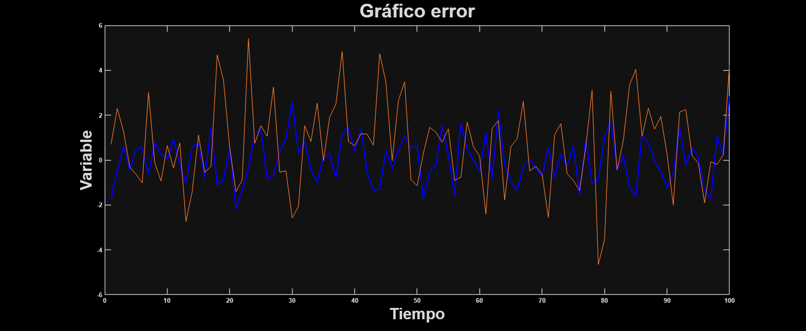
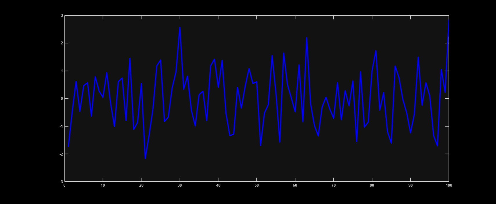
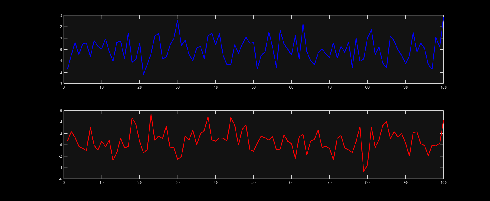
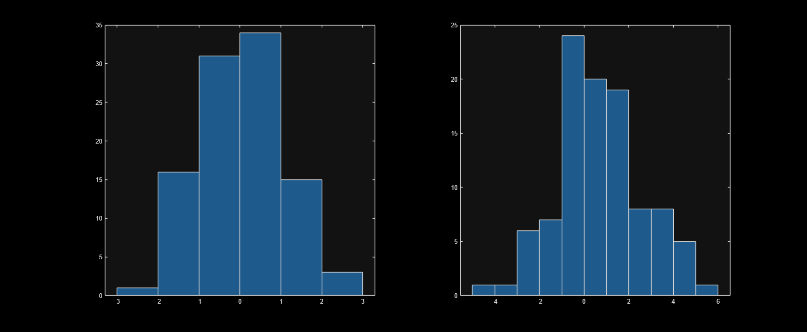
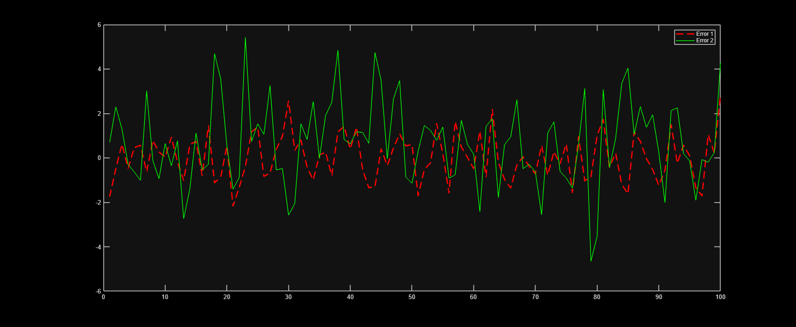

Contents
Clase 3
clear;
close all;
trend = 1:100;
error1 = randn(1,100);
error2 = 1 + 2*randn(1,100);
figure
plot(trend, error1, "blue", "LineWidth" , 2);
line(trend, error2);
title("Gráfico error", "FontSize", 30);
xlabel("Tiempo", "FontSize", 25);
ylabel("Variable", "FontSize", 25);
set(gca, 'FontWeight', "bold");

cálculo de estadísticos
figure
plot_guardado = plot(trend, error1, "blue", "LineWidth" , 3);
mean(error1);
figure
subplot(2,1,1)
plot(trend, error1, "blue", "LineWidth" , 2);
subplot(2,1,2)
plot(trend, error2, "red", "LineWidth" , 2);
mean(error1);
mean(error2);
std(error1);
std(error2);
std(error1)^2;
figure
subplot(1,2,1);
histogram(error1);
subplot(1,2,2);
histogram(error2);
figure
plot(trend, error1, "red", "LineWidth" , 2, "LineStyle", "--");
hold on;
plot(trend, error2,"green");
legend('Error 1',"Error 2")
   